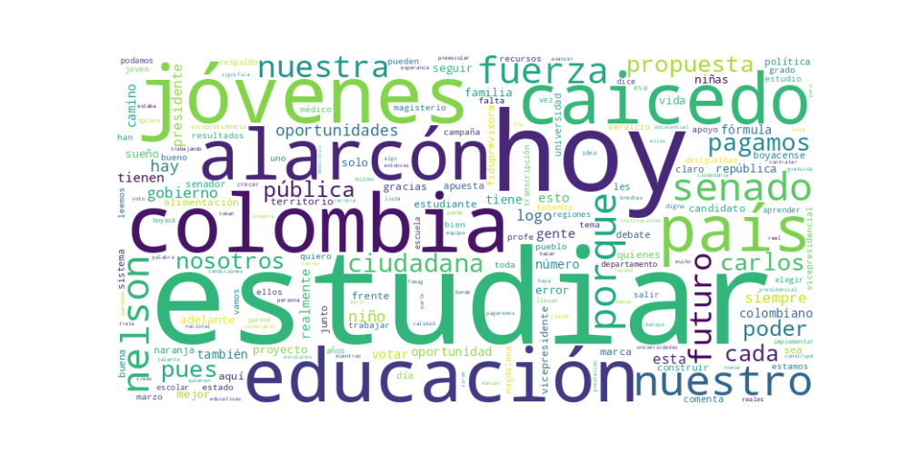

Seguidores: 42,381
Reporte de Análisis de Comunicación - Candidato Nelson Alarcón
Análisis basado en el corpus de publicaciones en Instagram
1. Perfil de Comunicación
El estilo de comunicación es predominantemente informal y cercano, con un enfoque pedagógico y coloquial. Utiliza un lenguaje popular y accesible, alejado de tecnicismos, dirigido a conectar emocionalmente con la ciudadanía. Se presenta como "el profe" (apelando a su trayectoria educativa y sindical), lo que refuerza una imagen de confianza y proximidad. Combina mensajes directos con llamados a la acción, usando frecuentemente emojis y hashtags para dinamizar el discurso. Aunque habla de política nacional, lo enmarca en experiencias locales y cotidianas.
2. Temas Principales
1. Educación: Eje central de su discurso. Aborda la deserción escolar, la falta de oportunidades y propone soluciones concretas.
Ejemplo: "Te pagamos por estudiar... Los estudiantes de décimo y once recibirán $875.000 al mes. Los universitarios, $1’750.000".
2. Juventud y Oportunidades: Vincula educación con superación económica, destacando historias personales de jóvenes.
Ejemplo: Relatos de jóvenes como Marlon o Darwin, que "tienen que elegir entre trabajar o estudiar".
3. Lucha contra la Corrupción: Critica la privatización y los manejos irregulares en servicios públicos como el Plan de Alimentación Escolar (PAE).
Ejemplo: "Acabaremos con todo tipo de intermediación y corrupción... Entregaremos la administración del PAE a las asociaciones de padres".
4. Defensa de lo Público y Regional: Reivindica el rol del Estado y el poder de las regiones, atacando a élites tradicionales.
Ejemplo: "El Magdalena no está para retroceder... quienes hoy aplauden son los mismos que han frenado proyectos".
5. Salud y Derechos Laborales: Respaldando protestas del magisterio y criticando la crisis en salud.
Ejemplo: "Acompañamos el paro nacional de FECODE... frente a la mala prestación del servicio médico".
3. Tono y Sentimiento Dominante
El tono es propositivo y esperanzador, pero con un fuerte componente crítico y confrontacional hacia actores políticos tradicionales (ej. Centro Democrático, Paloma Valencia). Combina un mensaje de optimismo ("construir futuro") con denuncias contra "los mismos de siempre". Predomina un sentimiento de urgencia y transformación, apelando a la acción colectiva.
4. Palabras Clave de Poder
- "Te pagamos por estudiar": Eslogan central y repetido estratégicamente.
- "Fuerza Ciudadana": Marca política y símbolo de unidad.
- "El pueblo vuelve al poder" / "El poder vuelve al pueblo": Enmarca su propuesta como una restitución democrática.
- "Resultados": Vincula su gestión con obras tangibles (ej. vías, proyectos locales).
- "Educación pública, gratuita y de calidad": Triada que sintetiza su compromiso educativo.
- "Los mismos de siempre": Encarna a sus adversarios como élites corruptas y retrógradas.
5. Conclusión Estratégica
La estrategia de comunicación de Alarcón apunta a movilizar a bases populares, jóvenes y sectores educativos, presentándose como el candidato de la educación y la justicia social. Su discurso busca evocar identificación emocional a través de historias de vida, mientras estructura una narrativa de "ellos vs. nosotros" para diferenciarse de la política tradicional. Al enfatizar su origen regional (Boyacá/Magdalena) y su rol como "profe", construye una imagen de autenticidad y cercanía. En síntesis, busca posicionar la educación como catalizador de cambio social, combinando pragmatismo (propuestas concretas) y símbolos de lucha colectiva para generar adhesión electoral.
Fecha de Análisis: Corpus de los 10 videos de Instagram con mayor engagement.
El patrón de éxito se basa en una combinación poderosa de empatía y oferta concreta. El candidato no solo denuncia una problemática social (la deserción escolar/juvenil), sino que inmediatamente la personaliza, humaniza y la contrapone a una propuesta de política pública tangible y directa ("Te Pagamos por Estudiar"). La fórmula es: Identificar un dolor social profundo + Darle rostro e historia + Presentarse como la única solución viable y ejecutable. Se basa en la emoción (esperanza, indignación por la injusticia) pero anclada en una promesa material clara, evitando la abstracción típica del discurso político.
El tema absoluto y unificador es "Te Pagamos por Estudiar". Es el eje central que organiza todo el contenido exitoso. Los subtemas que orbitan alrededor y le dan profundidad son: 1. Deserción Escolar por Razones Económicas: Presentado como la tragedia nacional evitable. 2. Corrupción en lo Público: Especialmente en el Plan de Alimentación Escolar (PAE), como ejemplo del "sistema" que roba el futuro. 3. Infraestructura Educativa Deteriorada: Como símbolo del abandono estatal, sobre todo en zonas rurales. 4. La Juventud como Presente (no solo Futuro): Reivindica a los jóvenes como agentes de cambio ahora, si se les dan las herramientas.
El discurso se dirige principalmente a dos segmentos superpuestos: * Jóvenes (16-28 años) de estratos bajos y medios-bajos: Aquellos que enfrentan o han enfrentado la disyuntiva real de "trabajar o estudiar". El lenguaje coloquial ("Pilas pues", "chicos", "full") y el uso de testimonios de pares buscan la identificación directa. * Familias y adultos conectados emocionalmente con la problemática juvenil: Padres, tíos, hermanos mayores que ven en la propuesta una solución al problema de su círculo cercano. El mensaje apela también a su sentido de justicia y deseo de movilidad social para los suyos. La comunicación presume una audiencia escéptica ante las promesas políticas tradicionales, pero ansiosa por soluciones prácticas y directas.
La clave fundamental del poder de su discurso es la conversión de una política pública compleja en una transacción emocional y moralmente clara. Mientras el discurso político tradicional suele ofrecer "planes" o "proyectos", este candidato ofrece un "trato": "Tú te esfuerzas estudiando, y el Estado (nosotros) te retribuye y te apoya materialmente para que lo logres.".
Lo que lo hace potente y diferente es que desplaza el debate de lo ideológico a lo logístico y lo ético. No discute teorías económicas; discute presupuestos concretos para solucionar un problema humano específico. Su diferencial no es una ideología, sino un mecanismo: pagar por estudiar. Esto le permite presentarse no como un político más, sino como un gestor eficaz y empático que tiene la "fórmula" (palabra recurrente) que el sistema actual ha sido incapaz de implementar. Su poder reside en simplificar sin banalizar, ofreciendo una esperanza creíble porque es materialmente cuantificable.

Caption: Colombia perdió 920.000 estudiantes en 10 años. Solo entre 2024 y 2025: 224.000 jóvenes más dejaron de estudiar. No es un número. Es un municipio entero de sueños que el sistema dejó ir. Y lo más grave: la caída es más rápida que el descenso demográfico. Esto no es solo que nacen menos niños — es que el sistema está expulsando a los jóvenes que sí existen. Por eso Te Pagamos por Estudiar no es un eslogan. Es la respuesta que Colombia lleva décadas necesitando. 📌 Cuéntanos en los comentarios: ¿conoces a alguien que tuvo que dejar de estudiar por temas económicos? #TePagamosPorEstudiar #EducaciónColombia #Caicedo2026 #NelsonAlarcón
Likes: 1,159 | Comentarios: 0 | Reproducciones: 961
Ver en InstagramCaption: La Juventud es el presente y futuro de Colombia, por eso nuestra propuesta #TePagamosPorEstudiar es bien recibida en Tunja (Boyacá). Gracias Dr. Carlos Caicedo @carlosecaicedo por la oportunidad que un Boyacense sea su fórmula Vicepresidencial.
Likes: 1,196 | Comentarios: 4 | Reproducciones: 1,018
Ver en InstagramCaption: En nuestro Gobierno Caicedo Presidente, Alarcón Vicepresidente el Plan de Alimentación Escolar PAE será con almuerzo caliente y refrigerio reforzado para todas las niñas, niños y jóvenes desde el preescolar de tres grados hasta el grado 11; el manejo y la administración del PAE será directamente por los Padres de Familia a través de sus asociaciones con el acompañamiento de las administraciones municipales. Acabaremos con todo tipo de intermediación y corrupción. #CaicedoPresidente #AlarcónPresidente
Likes: 1,238 | Comentarios: 2 | Reproducciones: 1,666
Ver en Instagram